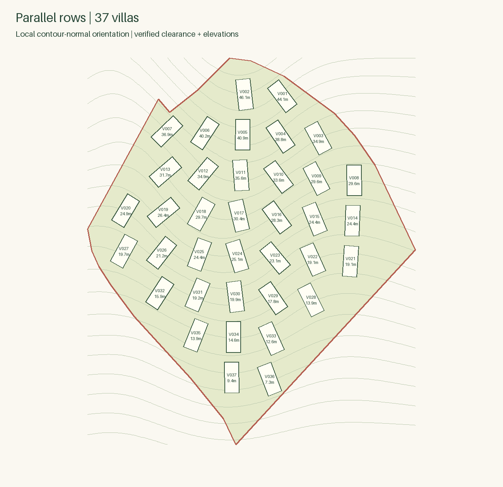
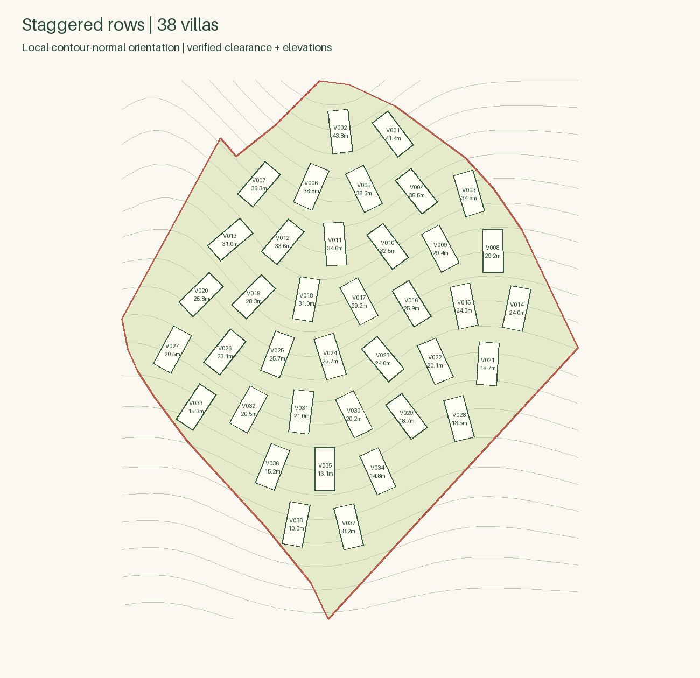

Parallel rows
37 villas · row pitch 30.05 m · all checks passed

Staggered rows
38 villas · row pitch 30.05 m · all checks passed

Exact footprints and pad levels. Synthetic contour reference; landscape, roads and final terrain are not designed.
37 villas · row pitch 30.05 m · all checks passed

38 villas · row pitch 30.05 m · all checks passed
